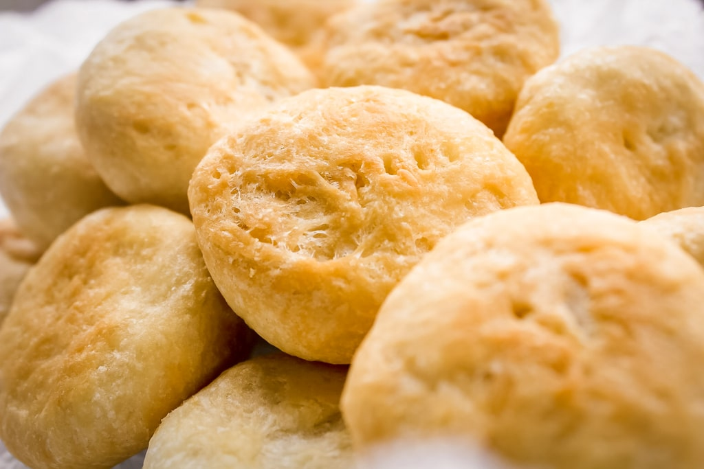
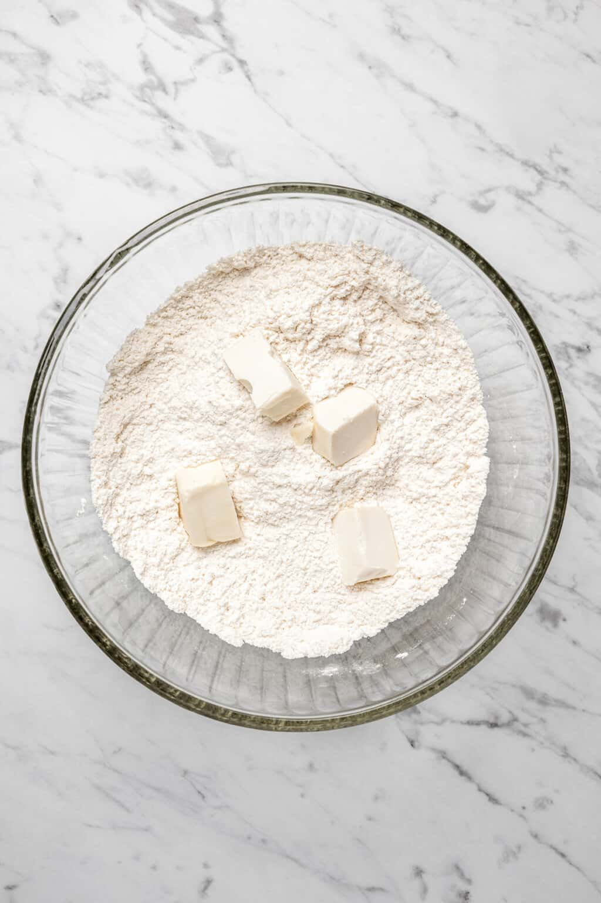

Jamaican Fried Dumpling Recipe

Why make Fried Dumplings?
Fried dumplings are a staple in jamaican cooking, being paired with breakfast lunch and dinner dishes. I personally love to have then with a breakfast of eggs, beans and sausages. But there are so mang dishes they can accompany. Follow the bellow to get make those carribean takeway quality dumplings today!
Jamaican fried dumplings are very different and simply compared to many of the dumplings that are used in other cusines across the world. They are more similar to the english suet dumpling when boiled, but this fried version is crispy on the outside and soft and light in the middle.
Ingredients
The following ingredients will make 8 dumplings to feed 4 people.
- 240g Plain Flour
- 1 tbsp baking powder
- 1 tsp salt
- 4 tsp sugar
- 60g butter
- Approximately half a cup of water
- Oil for frying
Directions
- To a bowl, add the flour, baking powder, sugar, and salt and whisk to combine.

- Add the butter to the flour mixture and smash it with a fork to combine. Continue to combine the butter and flour mixture until it has a sandy, crumb-like texture.
- Add the water, a little at a time, to the flour and butter mixture and stir it with a fork or your hand to form a dough. Knead for about 2-4 minutes. There should still be some flour that needs to be worked into the dough.
- Transfer the contents of the bowl to a clean, dry work surface and knead the dough until all dry ingredients are just combined. Do not over-knead the dough. It should still look a little rough on the outside and not smooth. Cover the dough with a wet paper towel and allow to rest for at least 10 minutes, ideally 30 minutes.
- Tear off golf ball sized amounts of dough and roll slightly into a ball. When all dough balls are rolled, gently flatten them in the centre only slightly before carefully placing them in the oil a few at a time. This helps them to fry evenly (they will form back into round balls in the oil). Cover your dough again while your oil heats up.
- Tear off a small piece of dough no larger than a 1/2 teaspoon and place it in the oil. If the oil around the dough starts to bubble all around it then it’s ready for frying.

- Cook the dough in the oil until golden brown on each side, flipping when needed (approximately 6 - 8 minutes).
- Place a few paper towels onto a plate. Carefully remove the dumplings from the oil and transfer them to the plate. Serve warm.